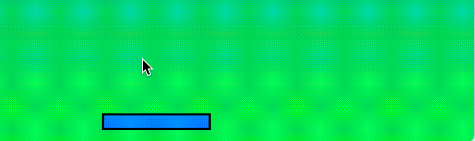

Casse Brique - Introduction à Scratch
On nous parle de plus en plus d'algorithmes et de programmation, mais c'est quoi au juste tout ça et comment ça marche ?
En réalisant ce projet vous découvrirez ce qui se cache derrière ces mots et bien plus. Si vous n'avez jamais programmé en Scratch (ou jamais programmé du tout), vous aurez l'occasion d'écrire votre premier programme, cela afin de créer vous-même le jeu casse briques, un classique parmi les jeux vidéo.
Il vous permettra de découvrir les constituants de bases de tous les programmes qui sont de plus en plus présent dans notre quotidien.
Definition 1: Algorithme et programme
Un algorithme est une stratégie qui est définie de façon non-ambiguë pour résoudre un problème. Un algorithme est compréhensible par les humains (du moins par beaucoup d'entre eux). Si nous voulons que ce problème soit résolu par une machine, alors il va falloir traduire cet algorithme en programme à l'aide d'un langage compréhensible par la machine.
Il y a tellement à dire sur la création de jeux vidéo, autant d'un point de vue informatique que psychologique. On pourrait s'intéresser par exemple à la question de "Qu'est-ce qui nous donne du plaisir à jouer et qui nous donne envie de continuer?". Mon objectif étant de faire une introduction rapide à scratch, je ne toucherais cependant pas à ce sujet aussi pationnants qu'ils soient.
Pré-requis
Pour suivre cette activité, vous n'aurez besoin d'aucun pré-requis. Tout ce qu'il vous faudra c'est de la concentration. Ne vous fiez pas juste à l'apparence de Scratch. Derrière cette allure enfantine il peut donner lieu à de jolis casse-têtes !
Découverte de Scratch

Figure 1: Scratch et son interface.
Pour commencer, inscrivez-vous sur Scratch. Une fois que c'est fait, créez un nouveau projet. Vous devriez alors vous retrouver sur une page identique à celle présentée en Figure 1.
Que trouvons-nous dans cette page:
- l'encadré 1 donne accès à des outils qui permettent de naviguer en dehors de notre projet, mais surtout d'agir sur notre projet tout entier. Le globe permet par exemple de choisir dans quel langue nous voulons travailler. Le menu File ou Fichier permet entre-autres de sauvegarder le projet sur le cloud ou sur notre ordinateur, ce que je vous invite à faire avant de quitter scratch si vous ne voulez pas perdre votre précieux travail.
- Pour comprendre le reste des encadrés, imaginez que scratch permet de monter un spectacle où le metteur en scène c'est vous. L'encadré 2 correspond à la scène de ce spectacle. Vous pourrez y placer vos acteurs comme bon vous semble, et vous pourrez voir le spectacle se'y dérouler après avoir donné le script à chaque acteur.
- L'encadré 3 va vous permettre de définir le décors de votre spectacle ainsi que les différents acteurs présents. Les acteurs dans Scratch sont appelés Sprite (anglais pour lutin).
- Enfin l'encadré 4 va vous permettre de définir l'apparence (les apparences) de chacun sous l'onglet Costumes et le script de chacun: quel acteur va faire quoi à quel moment. C'est ici que nous allons programmer. Pour programmer en scratch, c'est bien simple: on va principalement glisser des blocs et les emboiter les uns à la suite des autres. L'avantage de ce type de programmation, c'est que les fautes de syntaxes (équivalent des fautes d'orthographes en français) n'existent pas, ce qui va vraiment nous simplifier la vie dans nos premiers pas en programmation !
Exercice 1
Le programme de Sprite1 (le sprite par défaut) est vide actuellement. Modifiez le pour qu'il avance de 10 pas quand le drapeau vert est cliqué. Pour cela vous aurez besoin d'un bloc de type Événements et d'un bloc de type Mouvement.
Solution exercice 1
 En emboitant le bloc avancer de 10 pas à la suite d'un bloc quand drapeau est cliqué, vous avez écrit votre premier programme en Scrath pour résoudre le problème posé. Cliquez sur le drapeau vert et observez que le sprite réalise le programme qui lui a été donné.
En emboitant le bloc avancer de 10 pas à la suite d'un bloc quand drapeau est cliqué, vous avez écrit votre premier programme en Scrath pour résoudre le problème posé. Cliquez sur le drapeau vert et observez que le sprite réalise le programme qui lui a été donné.
Exercice 2
Modifiez votre programme pour que le sprite fasse quelque chose de surprenant. Lâchez-vous !
Une solution à l'exercice 2

Maintenant que vous êtes familiarisé avec l'interface scratch, voyons ensemble comment créer un jeu à partir de cela et quel concepts informatiques se cachent derrière. Si vous en avez l'envie, n'hésitez pas à prendre un moment pour réfléchir aux différentes étapes que vous mettriez en place pour réaliser un tel projet. Si vous préférez vous focaliser sur la programmation alors continuez à lire.
Raquette

Figure 2: Objectif final: La raquette suit la souris.
Dans le casse briques, 3 acteurs sont sur la scène: la raquette, la balle et les briques. Voyons d'abord comment programmer la raquette puisqu'elle nous permettra de réinvestir ce que nous venons de voir au sujet de l'interface, tout en commençant avec un programme simple.
Exercice 3
Modifiez le fond d'écran comme bon vous semble et définissez le programme de la raquette pour qu'elle suive la souris horizontalement. Pour cela vous aurez besoin d'un événement déclencheur (le drapeau), d'un bloc contrôle et d'un bloc mouvement.
Solution exercice 3
 Ici, y qui correspond à la position verticale de notre sprite. Comme 0 correspond au milieu de la scène et -180 au bas, on fixe y à -160.
Ici, y qui correspond à la position verticale de notre sprite. Comme 0 correspond au milieu de la scène et -180 au bas, on fixe y à -160.
Ce premier exercice nous permet de découvrir 3 éléments essentiels en programmation:
- les instructions: les programmes sont constitués de séquences d'instructions. Chacune correspond à une action que l'ordinateur doit réaliser. Ici nous avonns utilisé l'instruction "aller à x:... y:..." qui nous permet de déplacer notre sprite à la position que nous souhaitons.
- les événements: De nombreux langages de programmation sont dits séquentiels: ils suivent une séquence d'instructions de manière chronologique. D'autres comme scratch sont événementiels: les instructions sont exécutées en fonction d'événements déclencheurs. En scratch on pourra ainsi facilement écrire un programme qui fera deux choses en même temps (du moins nous donner cette impression) quand le drapeau sera cliqué. Pour cela il suffira d'écrire deux sous-programmes commençant par l'événement drapeau.
- les boucles: pour programmer la raquette afin qu'elle aille à la position de la souris, puis qu'elle aille à la position de la souris, puis qu'elle aille à la position de la souris... nous aurions pu dupliquer le bloc mouvement et le coller un infinité de fois à la suite de mon événement. Cela nous aurait demandé de cliquer... une infinité de fois. Heureusement les boucles permettent de faire cela pour nous et nous permettent de nous faciliter la vie, d'éviter les répétitions superflues et de rendre notre programme plus lisible.
Balle

Figure 3: Objectif final: La balle suit la raquette. Quand je clique sur la raquette la balle est lancée et rebondit sur les murs et la raquette. Si la balle touche le bas de la scène, le fond est changé pour montrer "Game Over" et tout s'arrête.
Lorsque le jeu commence la balle doit rester sur la raquette. Quel programme donner à la balle ? Jusqu'à maintenant rien de nouveau. On peut écrire le même programme que celui de la raquette, à la différence de la valeur y du bloc aller à .... En effet puisque la raquette suit la souris, pour que la balle suive la raquette on peut simplement la programmer à suivre la souris.
Le problème est plus intéressant lorsqu'on ajoute maintenant pour objectif que la balle doit être lancée quand la raquette est cliquée. Et attention: la balle n'est lancée que si elle était sur la raquette !
Deux états
Décomposons le problème: d'abord voyons comment programmer la balle pour qu'elle se déplace, puis comment gérer la transition de la balle qui suit la raquette, à la balle qui se déplace sur la scène après son lancement.
Exercice 4
Écrire un programme pour que la balle se déplace suivant une ligne droite dans la scène et qu'elle rebondisse sur les bords. Pour cela vous aurez bien sûr besoin de l'événement drapeau, auquel vous pourrez ajouter un bloc contrôle et deux blocs de type mouvement.
Solution exercice 4

Nous avons à présent défini deux programmes: l'un qui nous permet d'avoir la balle qui suit la raquette (ou en vrai la souris) et l'autre qui permet d'avoir la balle en mouvement dans notre scène.
Question
Puisque la balle doit d'abord suivre la raquette puis se déplacer sur la scène et rebondir, puis-je simplement combiner mes deux programmes ?
Réponse
 La réponse est non: 1. Si je mets une boucle infinie suivie d'une autre boucle infinie, la deuxième sera ignorée car le programme restera dans la première. C'est pour cela qu'il n'est pas possible d'imbriquer de bloc à la suite d'une boucle infinie dans Scratch comme le montre la figure ci-dessus; 2. Si j'avais mis mes deux programmes ensemble, les deux s'exécuteraient en même temps quand le drapeau est cliqué et la boucle de suivi de souris l'emporterait sur l'autre ce qui ne résoudrait pas notre problème.
La réponse est non: 1. Si je mets une boucle infinie suivie d'une autre boucle infinie, la deuxième sera ignorée car le programme restera dans la première. C'est pour cela qu'il n'est pas possible d'imbriquer de bloc à la suite d'une boucle infinie dans Scratch comme le montre la figure ci-dessus; 2. Si j'avais mis mes deux programmes ensemble, les deux s'exécuteraient en même temps quand le drapeau est cliqué et la boucle de suivi de souris l'emporterait sur l'autre ce qui ne résoudrait pas notre problème.
Pour résoudre notre problème, il nous manque deux éléments primordiaux à beaucoup d'algorithmes et de programmes:
- les variables: elles jouent souvent le rôle de mémoire. Par exemple dans notre jeu, nous ne souhaitons pas seulement que mon programme fasse quelque chose quand la raquette a été cliquée, nous voulons aussi pouvoir nous souvenir que cela est arrivé. Pour cela nous allons définir une variable nommée État, qui sera initialisée à "Init" au début du programme et que l'on modifiera à "Jeu" quand la raquette sera cliquée. Comme on peut le voir dans cet exemple, une variable a un nom et elle contient une information qui peut être modifiée et lue.
- les conditions: il va falloir que notre balle suive la raquette si la variable État a pour valeur "Init" et qu'elle se déplace en rebondissant si État a pour valeur "Jeu". On appelle cela des instructions conditionnelles: ce sont des instructions qui ne seront réalisées que si une condition que l'on a définie est vraie. Dans un test on a donc au moins deux éléments essentiels: une question/condition qui ne peut être répondue que par "oui" ou "non" (on parlera de booléen dans le milieu de l'informatique) et les instructions à réaliser si la réponse est "oui".
Exercice 5
Écrire un programme pour que la balle suive la raquette au début du programme, puis, après un clic sur la raquette, qu'elle se déplace diagonalement dans la scène et rebondisse. Pour cela vous aurez besoin des blocs de type variables, contrôle et opérateurs. Remarquez les différentes formes de blocs. Dans le bloc "si alors" on ne peut qu'imbriquer des blocs losanges après le si. Pourquoi ? Parce qu'après le "si", comme on l'a vu précédement, on ne peut avoir qu'une expression qui retourne "oui" ou "non", et c'est ce que font ces blocs losange. Vous trouverez des blocs de ce type dans les Opérateurs.
Solution exercice 5
 Dans le bloc losange " ... = ... " on a imbriqué le bloc variable État d'un côté et tapé la valeur "Init" ou "Jeu" de l'autre côté. Encore une fois on peut remarquer la forme spéciale de ces blocs qui est cette fois-ci arrondie. Ces blocs arrondis correspondent à des informations qui peuvent être de différents types (texte ou nombres). Dans ce cas le bloc arrondi "État" renvoie la valeur qui est mémorisée dans la variable. Ainsi, si je devais traduire la première condition qui apparaît dans ce programme en français, je le traduirais comme "Si la variable État a pour valeur Init alors...". Remarquez également qu'un bloc "s'orienter à 30°" a été ajouté pour que la balle se déplace en diagonale.
Dans le bloc losange " ... = ... " on a imbriqué le bloc variable État d'un côté et tapé la valeur "Init" ou "Jeu" de l'autre côté. Encore une fois on peut remarquer la forme spéciale de ces blocs qui est cette fois-ci arrondie. Ces blocs arrondis correspondent à des informations qui peuvent être de différents types (texte ou nombres). Dans ce cas le bloc arrondi "État" renvoie la valeur qui est mémorisée dans la variable. Ainsi, si je devais traduire la première condition qui apparaît dans ce programme en français, je le traduirais comme "Si la variable État a pour valeur Init alors...". Remarquez également qu'un bloc "s'orienter à 30°" a été ajouté pour que la balle se déplace en diagonale.
Trois états
Il ne manque maintenant plus qu'à faire rebondir la balle sur la raquette, et à arrêter le jeu lorsque la balle touche le bas de la scène. Pour cela nous allons découvrir les blocs de type "capteurs". En robotique, il est possible d'équiper les robots de capteurs pour qu'ils puissent percevoir des informations de leur environnement. Dans scratch, nos sprites aussi sont équipés de capteurs. Ainsi un sprite pourra savoir sa position dans l'espace, savoir quand il est touché par un autre sprite et bien d'autres informations.
Exercice 6
Modifier le programme de la balle en utilisant ses capteurs pour que celle-ci rebondisse sur la raquette et pour afficher Game Over et que tout s'arrête quand la raquette manque la balle. Pour cela vous mettrez la valeur "Over" dans la variable État.
Solution exercice 6
 Remarquez ici l'utilisation du bloc "GestionDéplacement". Vous n'avez normalement pas ce bloc. Pourquoi ? Parce que c'est un bloc que j'ai créé moi même et que je vous invite à créer également grâce aux types de blocs "Mes Blocs". Dans cette catégorie vous trouverez un bouton "Créer un bloc" qui vous permettra de créer un bloc du nom que vous souhaitez. Pour quoi faire? Parce que ça me permet de faire tenir mon programme dans un imprim-écran, mais pas seulement ! Créer un bloc en scratch, correspond en informatique à la création d'une procédure. Dans le programme ci-dessus à droite vous pouvez voir la définition de la fonction "GestionDéplacement", qui définit ce qui sera exécuté quand la fonction sera appellée. A gauche la fonction est appellée. Les procédures sont utiles pour résoudre un problème en le décomposant, ce qui est primordial en pensée informatique. Dans le cas présent, j'ai voulu résoudre mon problème de gestion du déplacement et j'ai donc créé la fonction pour le résoudre. Un autre avantage est que si j'ai un problème avec mon déplacement au moment de l'exécution de mon programme, je sais maintenant exactement où regarder.
Remarquez ici l'utilisation du bloc "GestionDéplacement". Vous n'avez normalement pas ce bloc. Pourquoi ? Parce que c'est un bloc que j'ai créé moi même et que je vous invite à créer également grâce aux types de blocs "Mes Blocs". Dans cette catégorie vous trouverez un bouton "Créer un bloc" qui vous permettra de créer un bloc du nom que vous souhaitez. Pour quoi faire? Parce que ça me permet de faire tenir mon programme dans un imprim-écran, mais pas seulement ! Créer un bloc en scratch, correspond en informatique à la création d'une procédure. Dans le programme ci-dessus à droite vous pouvez voir la définition de la fonction "GestionDéplacement", qui définit ce qui sera exécuté quand la fonction sera appellée. A gauche la fonction est appellée. Les procédures sont utiles pour résoudre un problème en le décomposant, ce qui est primordial en pensée informatique. Dans le cas présent, j'ai voulu résoudre mon problème de gestion du déplacement et j'ai donc créé la fonction pour le résoudre. Un autre avantage est que si j'ai un problème avec mon déplacement au moment de l'exécution de mon programme, je sais maintenant exactement où regarder.
Si vous avez réussi à résoudre l'exercice précédent sans regarder la solution je vous en félicite. Je vous invite cependant à regarder tout de même la solution pour découvrir l'usage des procédures qui est le dernier élément essentiel à la plupart des programmes informatiques.
Briques

Figure 4: Objectif final: le jeu casse briques !
Nous voilà presque à la fin de notre programme. Dans cette dernière partie nous allons découvrir l'utilisation des boucles classiques (c'est-à-dire pas infinies), et une particularité vraiment sympa de scratch qui est la création de clones. Vous verrez que le programme est très court mais qu'il demande un exercice de pensée un peu particulier...
Exercice 7
Créer un nouveau sprite nommé "Brique". En utilisant entre autres une boucle "Répéter ... fois", l'instruction Contrôle "créer un clone de moi-même" et l'instruction "aller à x:...,y:...", créer un mur de 6 briques de large et d'une brique de haut quand le drapeau est appuyé.
Solution exercice 7
 Si vous n'avez pas résolu le problème sans regarder, prenez un morceau de papier et essayez de simuler le programme ci-dessus. Après l'exécution de ce programme, combien de briques y à t'il ?
Si vous n'avez pas résolu le problème sans regarder, prenez un morceau de papier et essayez de simuler le programme ci-dessus. Après l'exécution de ce programme, combien de briques y à t'il ?
Exercice 8
Modifier maintenant votre programme pour que votre mur soit toujours créé à la même place et qu'il soit de 3 briques de haut. Utilisez pour cela une boucle imbriquée, c'est-à-dire une boucle dans une boucle.
Solution exercice 8

Exercice 9
Enfin modifiez votre programme pour que la balle casse les briques tout en rebondissant dessus.
Solution exercice 9
 Dans la solution que je propose ici, j'ai utilisé la fonction "Envoyer à tous rebond". J'ai aussi ajouté un bloc "quand je reçois Rebond" dans le programme de ma balle que je ne montre pas ici. J'aurais pu ajouter une condition "si touche brique" dans le programme de ma balle, cependant, puisque le programme de la balle et celui de ma brique tournent en parallèle, si j'avais choisi cette deuxième option, alors il serait probable que le clone de ma brique soit supprimé avant que ma condition de balle soit testée. Ainsi il serait possible que ma balle ne rebondisse pas à chaque fois contre les briques.
Comme mes explications commencent à être longue je les arrête là et je vous invite à prendre le temps de bien lire ce programme afin de comprendre pourquoi j'ai utilisé les instructions "cacher" et "montrer" comme je l'ai fait.
Dans la solution que je propose ici, j'ai utilisé la fonction "Envoyer à tous rebond". J'ai aussi ajouté un bloc "quand je reçois Rebond" dans le programme de ma balle que je ne montre pas ici. J'aurais pu ajouter une condition "si touche brique" dans le programme de ma balle, cependant, puisque le programme de la balle et celui de ma brique tournent en parallèle, si j'avais choisi cette deuxième option, alors il serait probable que le clone de ma brique soit supprimé avant que ma condition de balle soit testée. Ainsi il serait possible que ma balle ne rebondisse pas à chaque fois contre les briques.
Comme mes explications commencent à être longue je les arrête là et je vous invite à prendre le temps de bien lire ce programme afin de comprendre pourquoi j'ai utilisé les instructions "cacher" et "montrer" comme je l'ai fait.
Conclusion
Vous voilà à la fin de cette activité de programmation. Merci de vous être accroché jusqu'au bout. Nous pourrions améliorer notre jeu de bien des façons encore. Ma mission à moi qui était de vous faire découvrir la programmation en scratch est cependant achevée. Je me limiterais donc dans cette conclusion à vous proposer des pistes pour aller plus loin. Pour cela vous pourriez modifier votre programme pour:
- Que plus le temps passe plus la balle accélère (simple).
- Calculer et afficher un score (simple).
- Faire varier l'angle de rebond de la balle sur la raquette en fonction d'où le contact se fait (modéré).
- Gérer le rebond de la balle sur les bords des briques (difficile).
- Ajotuer des niveaux avec différentes configurations de briques (difficile)
Enfin vous pourriez bien sur essayer de programmer d'autres jeux. Essayez par exemple d'en programmer un auquel vous avez déjà joué ! De mon côté je me suis bien amusé à reprogrammer Fruit Ninja. Je trouve génial de faire voler des fruits dans tous les sens tout ça en quelques lignes! Pour trouver différents exemple de ce type en scratch je vous conseille fortement ce guide qui est assez facile à lire, bien qu'en anglais.